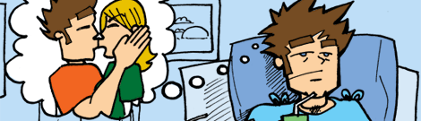

Thursday Treat | Fall 2008
Election 2008: It's Finally *$!!@! Over!
What has it been? Like 2 full years of political fornication finally ending with a climax on Nov. 4th? This week's thursday treat is expression of my elation that it's FINALLY OVER.
I admittedly I'm dissapointed with the outcome. Was it because my candidate wasn't elected? No. I wasn't elected. Go here to relieve my day-long run for the White House. It was an uphill battle. I didn't really have any support...or money, and I'm not 35 yet...but still. I want to thank everyone who wrote me on in the primary. See you in 2012.
Halloween 2008
So many cartoons this Halloween, so little time...
1) Check out some the Evil Veggies looking to strike down the world of healthy eaters. Check that out here.
2) Another comic, a little dated (the reference to NIU football coach Joe Novak) but, in any case, there are scary things lurking among the faculty of NIU. Check em out.
Want even more comics!!??!! Catch Up On Some Old Gone Clean, Wholesome Fun!
3) Check out a nice week about bringing out your girlfriends spooky side. Get freaked out here. Be sure to scroll down and read all five!
4) Merv (from my comic Gone Clean, Wholesome Fun) wanting Halloween to happy a little too early. Read here.
5) A variety of Halloween comics to enjoy here. Everything from keeping your pumpkin getting smashed, to the meaning of Halloween, to Jack, Merv, Jonesy, and Animal. Read up here. (Be sure to read all five!!!)
6) And lastly, a nice little rendering of a Halloween Scene. Go here.
The Scariest Thing in October
The scariest thing about October? Ghosts? Nope. Monsters? Nope. Scary
Movies? Nope. My vote: relationships. Here's an October edition of "signs you know it's not going to work out." View past editions of my "signs" theme in my comic Gone Clean, Wholesome Fun, check em out here!
The Image Below Says It All
Who's having the best day ever? The guy in this week's Thursday Treat! Read all about it here.
A Little Comic About Video Games
Remember when you were a kid and your big accomplishment in life was beating a video game baddie after hours and hours of play? Well this is about that...if it took a turn for the surreal. Up, Up, Down, Down, Left, Right, Left, Right, B,A,B,A, START HERE.
Will the Real Victor E. Huskie Please Stand Up
Ever wonder who the man behind the mask of your college mascot is? At NIU, who is the man behind the mask of the Victor E. Huskie? Find out all about it here.